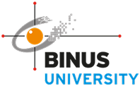
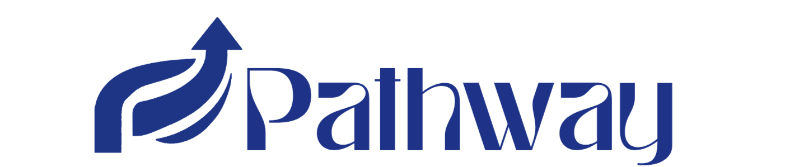

#TemukanArahMasaDepanmu
Angkat Potensi
Kenali minat dan bakatmu melalui tes yang mudah dan personal.
Pilih Arah
Dapatkan rekomendasi jurusan serta sekolah atau universitas yang sesuai dengan dirimu.
Rencanakan Masa Depan
Jelajahi peluang karier dan siapkan langkah terbaik untuk masa depanmu.
Kenapa Pathway?
Pathway layak dipilih karena memberikan solusi sederhana dan terarah bagi pelajar yang masih bingung menentukan masa depan. Melalui tes minat dan bakat, pengguna dapat mengenali potensi diri dan mendapatkan rekomendasi jurusan serta sekolah atau universitas yang sesuai. Selain itu, Pathway juga menyediakan informasi karier yang relevan, sehingga membantu pengguna memahami hubungan antara pendidikan dan dunia kerja.
Universitas Rekomendasi Pathway
BINUS University
Kampus swasta unggulan yang dikenal dengan program teknologi, bisnis, dan digital yang modern serta berorientasi industri.

Universitas Indonesia
Salah satu universitas terbaik di Indonesia dengan berbagai pilihan jurusan unggulan dan kualitas pendidikan yang diakui secara internasional.

Universitas Tarumanegara
Universitas swasta dengan kualitas pendidikan baik, terutama di bidang bisnis, hukum, dan teknik.
Institut Teknologi Bandung
Fokus pada sains dan teknologi, cocok untuk kamu yang ingin berkembang di bidang teknik dan inovasi.

Universitas Gadjah Mada
Salah satu universitas terbaik di Indonesia dengan program studi lengkap dan reputasi kuat di berbagai bidang.


Kontak kami bila anda butuh bantuan:


+62 0812-3456-7890